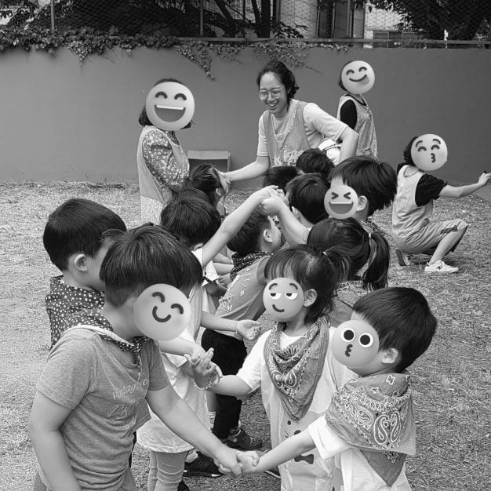
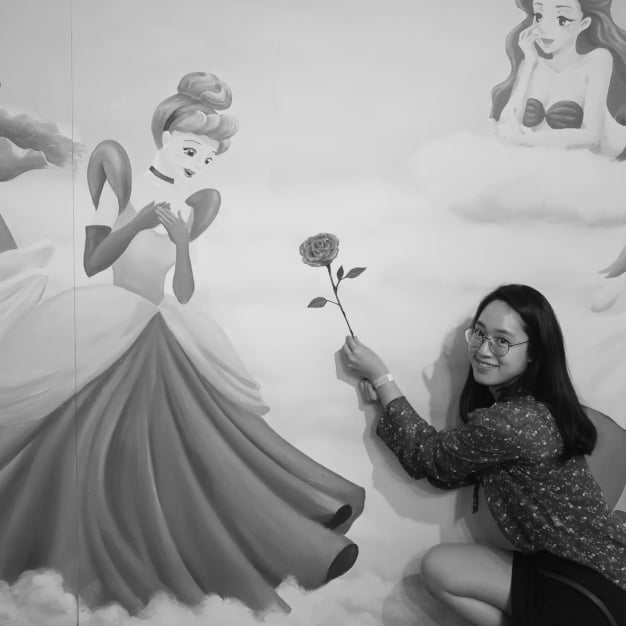

Ideas
Ideas
저를 새롭게 두근거리게 하는
코딩에 대한 꿈과 생각이 빛날 수 있도록
I want to create
an ingenious websites
with you.
personality
Personality Personality

downToEarth
안녕하세요. 프론트엔드 개발자를 꿈꾸는 최진주 입니다.
저는 하루를 솔직한 모습으로 채워갑니다. 그 무엇보다 정직하고 성실하게 살아가는 것이 제일 중요하다고
생각합니다. 프론트엔드 개발자를 위한 첫 걸음, 부족한 점이 많지만 성실하게 채운 오늘이
내일의 어려운 상황에서 올바른 판단의 기준이 될 것이라 믿습니다. 꾸준히 열심을 채우겠습니다.
저는 하루를 솔직한 모습으로 채워갑니다. 그 무엇보다 정직하고 성실하게 살아가는 것이 제일 중요하다고
생각합니다. 프론트엔드 개발자를 위한 첫 걸음, 부족한 점이 많지만 성실하게 채운 오늘이
내일의 어려운 상황에서 올바른 판단의 기준이 될 것이라 믿습니다. 꾸준히 열심을 채우겠습니다.

responsive
일상을 넓게 살펴보고 깊게 생각합니다.
저는 평소에 주변을 바라보면서 다양함을 찾고 여러 가지 상황에 대한 경우의 수를
생각해봅니다. 이를 바탕으로 예상치 못한 돌발 상황에서 침착하게 해결법을 찾을 수 있습니다. 코딩을 하면서 만나는
다양한 상황에서도 유연하게 대응할 수 있도록 여러 가지를 배우고 생각하는 자세를 잃지 않을 것입니다.
저는 평소에 주변을 바라보면서 다양함을 찾고 여러 가지 상황에 대한 경우의 수를
생각해봅니다. 이를 바탕으로 예상치 못한 돌발 상황에서 침착하게 해결법을 찾을 수 있습니다. 코딩을 하면서 만나는
다양한 상황에서도 유연하게 대응할 수 있도록 여러 가지를 배우고 생각하는 자세를 잃지 않을 것입니다.
curious
저의 호기심은 항상 대기상태입니다.
누군가에게 평범한 일들이 제게는 특별함으로 다가올 때가 많습니다. 특별함은 궁금증으로, 나아가
도전정신으로 이어지곤 합니다. 제 손으로 직접 경험해보면서 당연한 것들에 대해 새삼스레 배우고 또 배웁니다.
끊이지 않는 호기심으로 도전하고 성장하는 삶을 그려보고 싶습니다.
누군가에게 평범한 일들이 제게는 특별함으로 다가올 때가 많습니다. 특별함은 궁금증으로, 나아가
도전정신으로 이어지곤 합니다. 제 손으로 직접 경험해보면서 당연한 것들에 대해 새삼스레 배우고 또 배웁니다.
끊이지 않는 호기심으로 도전하고 성장하는 삶을 그려보고 싶습니다.

tenacious
시작한 일에 진심을 다합니다.
자전거를 타고 새로운 길을 찾아다니는 것을 좋아합니다. 막히는 길을 마주하거나 어려움이 생겨도
포기하지 않습니다. 내딛은 첫 걸음의 끝에서 스스로를 돌아보며 큰 성취감을 느낍니다.
코딩을 하면서 꼼꼼하고 정확한 결과를 만들고 싶은 욕심에 때로는 멈추기도 하고, 쫓아가기
바쁠지라도 끝까지 해내는 모습을 보여드리겠습니다.
자전거를 타고 새로운 길을 찾아다니는 것을 좋아합니다. 막히는 길을 마주하거나 어려움이 생겨도
포기하지 않습니다. 내딛은 첫 걸음의 끝에서 스스로를 돌아보며 큰 성취감을 느낍니다.
코딩을 하면서 꼼꼼하고 정확한 결과를 만들고 싶은 욕심에 때로는 멈추기도 하고, 쫓아가기
바쁠지라도 끝까지 해내는 모습을 보여드리겠습니다.

cooperative
둥글게 살아갑니다.
세상은 나홀로 살아가는 것이 아니라 다른 이와 서로 도우며 함께 걸어가는 것이라 생각합니다.
눈으로 보이는 이어짐이 없더라도 매순간 다른 누군가의 노력과 희생으로 일상이 원만하게 흘러감을 되새깁니다.
매일을 함께 할 동료분들과 소통하고 공감하며 원만한 관계를 맺어나가고 싶습니다.
세상은 나홀로 살아가는 것이 아니라 다른 이와 서로 도우며 함께 걸어가는 것이라 생각합니다.
눈으로 보이는 이어짐이 없더라도 매순간 다른 누군가의 노력과 희생으로 일상이 원만하게 흘러감을 되새깁니다.
매일을 함께 할 동료분들과 소통하고 공감하며 원만한 관계를 맺어나가고 싶습니다.

supportive
긍정적인 변화를 이끌어냅니다.
저의 작은 손길이 누군가에게 스며들어 따뜻한 빛이 될 수 있도록 응원하고 지지합니다.
느리지만 조금씩 변화한 오늘이 내일의 새로운 희망을 만든다고 생각합니다. 당장 나타나는 효과가
없더라도 언제나 제 자신과 주변을 응원하며 밝은 에너지를 공유하고 싶습니다.
저의 작은 손길이 누군가에게 스며들어 따뜻한 빛이 될 수 있도록 응원하고 지지합니다.
느리지만 조금씩 변화한 오늘이 내일의 새로운 희망을 만든다고 생각합니다. 당장 나타나는 효과가
없더라도 언제나 제 자신과 주변을 응원하며 밝은 에너지를 공유하고 싶습니다.

playful
단점보다는 유머를 찾습니다.
행복해서 웃는 게 아니라 웃어서 행복해진다는 말이 이전에는 와닿지 않았습니다. 시간이
흐르니 조금 알 것도 같습니다. 하루 동안 웃을 일이 얼마나 있을까요? 지치고 무너져도 미소를 회복합니다.
힘들었던 일은 웃어 넘겨버리고, 한 걸음 더 나아갈 힘을 만듭니다.
행복해서 웃는 게 아니라 웃어서 행복해진다는 말이 이전에는 와닿지 않았습니다. 시간이
흐르니 조금 알 것도 같습니다. 하루 동안 웃을 일이 얼마나 있을까요? 지치고 무너져도 미소를 회복합니다.
힘들었던 일은 웃어 넘겨버리고, 한 걸음 더 나아갈 힘을 만듭니다.
Configured Websites
Configured Websites
website design
6개월 동안 배운 HTML, CSS, JAVASCRIPT,
PHP, REACT, VUE 를 이용하여 웹 사이트를 제작하였습니다. 최신 트렌드를
반영하기 위해 지속적으로 스터디 모임에 참여하고, 핵심 사이트를
벤치마킹하며 부족한 부분을 채워가겠습니다.
01
- Webstandard
- Responsive
- React
- vue
- PHP
01
webstandard
웹 표준을 준수한 사이트를 구성하였습니다.
사용자의 편의 및 웹 접근성을 위한 스킵 메뉴, 탭 메뉴, alt 속성 대체 텍스트,
IR 효과를 적용하였습니다. W3C Validation을 통과하였으며
크로스 브라우징 작업을 완료하였습니다.
사용자의 편의 및 웹 접근성을 위한 스킵 메뉴, 탭 메뉴, alt 속성 대체 텍스트,
IR 효과를 적용하였습니다. W3C Validation을 통과하였으며
크로스 브라우징 작업을 완료하였습니다.
02
responsive
미디어쿼리를 사용하여 제작한 반응형 사이트 입니다.
viewport 및 다양한 크기의 디바이스 화면에서 렌더링되도록 구성하였고
Swiper Plugin 을 이용한 슬라이드 기능, 마우스 오버 효과,
패럴랙스 효과 등의 다양한 기능을 넣었습니다.
viewport 및 다양한 크기의 디바이스 화면에서 렌더링되도록 구성하였고
Swiper Plugin 을 이용한 슬라이드 기능, 마우스 오버 효과,
패럴랙스 효과 등의 다양한 기능을 넣었습니다.
03
react site ( Youtube )
Rapid API 를 활용한 유튜브 리액트 사이트입니다.
npm 라이브러리 중에서 react-router-dom, react-player 를 활용하였고,
useEffect 훅으로 출력하였습니다. useParams 에 정보를 저장하여
출력하는 채널 컨텐츠를 구성하였으며 카테고리 목록, 검색창,
영상 플레이, 관련 영상 목록 등을 구현하였습니다.
npm 라이브러리 중에서 react-router-dom, react-player 를 활용하였고,
useEffect 훅으로 출력하였습니다. useParams 에 정보를 저장하여
출력하는 채널 컨텐츠를 구성하였으며 카테고리 목록, 검색창,
영상 플레이, 관련 영상 목록 등을 구현하였습니다.
04
react site ( Team Project )
json 파일에서 정보를 가져오는 리액트 사이트입니다.
카페 음료 추천을 주제로 랜덤 선택, 기분에 따른 추천 및 검색 기능을 구현하였고,
앞서 제작한 유튜브 사이트를 참고하였습니다. 저는 전체적인
디자인 작업을 맡았으며 json 데이터 파일 및
검색 페이지를 제작하였습니다.
카페 음료 추천을 주제로 랜덤 선택, 기분에 따른 추천 및 검색 기능을 구현하였고,
앞서 제작한 유튜브 사이트를 참고하였습니다. 저는 전체적인
디자인 작업을 맡았으며 json 데이터 파일 및
검색 페이지를 제작하였습니다.
05
react site ( Youtube, Unsplash, TMDB )
Youtube, Unsplash, TMDB API 를 이용한 리액트 사이트 입니다.
Postman API 및 npm 라이브러리 중 react-router-dom 을 활용하였고,
props 와 map( ) 메서드로 데이터를 출력하였습니다. 랜덤 데이터를
Swiper slide 로 보여주고 검색창 및 카테고리 버튼 등을
구현하였으며, netlify 로 배포하였습니다.
Postman API 및 npm 라이브러리 중 react-router-dom 을 활용하였고,
props 와 map( ) 메서드로 데이터를 출력하였습니다. 랜덤 데이터를
Swiper slide 로 보여주고 검색창 및 카테고리 버튼 등을
구현하였으며, netlify 로 배포하였습니다.
06
vue site ( Youtube, Unsplash, TMDB )
앞서 제작한 리액트 사이트를 뷰 방식으로 구성한 사이트 입니다.
Postman API 및 firebase 를 활용하였고, v-for 구문을 이용한 리스트 렌더링을
구현하였습니다. 뷰는 리액트 방식과 달리 <template> 에 HTML, JS, CSS
영역을 구분하여 정해진 문법에 따라 작성하기에, 코드의
통일성을 가질 수 있다는 것을 알게 되었습니다.
Postman API 및 firebase 를 활용하였고, v-for 구문을 이용한 리스트 렌더링을
구현하였습니다. 뷰는 리액트 방식과 달리 <template> 에 HTML, JS, CSS
영역을 구분하여 정해진 문법에 따라 작성하기에, 코드의
통일성을 가질 수 있다는 것을 알게 되었습니다.
07
vue site ( practice )
vue 방식의 구조를 연습하기 위해 만든 사이트 입니다.
firebase 를 활용하였고 컴포넌트와 props 및 Swiper slide 를 사용하였습니다.
각 섹션 별 데이터는 배열 안의 객체에 저장하여 출력하였으며,
마우스 오버 효과, 반응형 등을 작업하였습니다.
firebase 를 활용하였고 컴포넌트와 props 및 Swiper slide 를 사용하였습니다.
각 섹션 별 데이터는 배열 안의 객체에 저장하여 출력하였으며,
마우스 오버 효과, 반응형 등을 작업하였습니다.
Coding study
Coding study
for ingenious
HTML, CSS, JAVASCRIPT 를 활용하여 기초
지식부터 응용 작업물까지 여러 종류의 페이지를 제작하였습니다. 긴 호흡으로
오랫동안 꾸준히 달려야 하는 마라톤을 하듯, 탄탄한 기본기를 토대로
기발하고 매력적인 페이지를 구현할 수 있도록 기본을
충실하게 쌓아가겠습니다.
지식부터 응용 작업물까지 여러 종류의 페이지를 제작하였습니다. 긴 호흡으로
오랫동안 꾸준히 달려야 하는 마라톤을 하듯, 탄탄한 기본기를 토대로
기발하고 매력적인 페이지를 구현할 수 있도록 기본을
충실하게 쌓아가겠습니다.
-
01
game effect
자바스크립트의 다양한 함수를 적용하여 제작한 음악 및 게임 플레이어 페이지
입니다. Ajax jQuery 를 활용하였고 이미지 드래그 효과, 날짜와 시간 및 사용 기기 정보 출력 등을
구현하였습니다. 정보 데이터는 배열 안의 객체로 저장하여 불러왔고 음악 플레이어, 서치 게임,
메모리 게임, 테트리스 게임 등이 규칙에 따라 기능하도록 제작하였습니다.
01 게임 이펙트 보기 -
02
parallax effect
스크롤 값에 따라 보여지는 요소의 움직임 속도를 조절하여 입체감을
느낄 수 있도록 제작한 패럴랙스 스크롤링 페이지 입니다. 메뉴 버튼 클릭시 부드럽게 이동하는
효과를 주었으며, 사이드 메뉴, 숨김 메뉴, 요소 나타내기, 이질감 효과,
텍스트 효과, 리빌 효과 등을 구현하였습니다.
02 패럴랙스 이펙트 보기 -
03
parallax effect_apple
동영상이 재생되는 듯한 느낌의 애플 사이트를 참고하여
제작한 자기소개 페이지 입니다. 섹션 별 div 태그의 데이터 속성에 스크롤 값과
CSS 속성을 정해놓고 스크롤 값이 해당 값과 일치할 때 애니메이션이
실행되도록 구성하였습니다.
03 패럴랙스 이펙트 애플형 보기 -
04
mouse effect
마우스 오버 효과로 커서의 모양 전환, 요소의 애니메이션 효과를 적용한
마우스 이펙트 페이지 입니다. 자바스크립트의 이벤트 속성을 아용하여 마우스의 위치 좌표값을
출력하였고 커서 트랜지션 효과, 마우스 따라다니기, 커서 조명 효과, 이미지 이질감
효과, 기울기 및 글자 반전 효과, 텍스트 효과 등을 구현하였습니다.
04 마우스 이펙트 보기 -
05
quiz effect
클릭 이벤트 메서드와 if else 조건문을 활용한 퀴즈 이펙트
페이지 입니다. 변수에 문제 정보를 저장하고 선택자 및 innerText, textContent 를 이용하여
데이터를 출력하였으며, 정답 확인 유형, 주관식 단일 및 다수 문항, 객관식 단일
문항 및 슬라이드 유형, 점수 계산 등을 구성하였습니다.
05 퀴즈 이펙트 보기 -
06
slide effect
if 조건문과 setInterval( ), setTimeout( ) 메서드를 이용한
슬라이드 페이지 입니다. 자바스크립트와 더불어 GSAP, jQuery 를 활용하는 방법도 연습하였고,
트렌지션 효과와 연속으로 움직이기, 버튼, 닷메뉴, 무한 이미지, 자동 플레이,
재생 정지 버튼, 오버했을 때 정지 효과 등을 구현하였습니다.
06 슬라이드 이펙트 보기 -
07
search effect
JS 의 문자열 검색 메서드와 forEach( ), if 조건문 등을 활용하여 제작한
서치 이펙트 페이지 입니다. CSS 속성을 내용을 주제로 데이터 속성으로 검색하기, 배열로 저장하여
검색하는 방법을 사용하였고, charAt( )으로 알파벳 버튼 검색, find( )로 설명 띄우기,
filter( )로 중요도 표시, 피셔 에이츠 알고리즘으로 정렬하기 등을 구현하였습니다.
07 서치 이펙트 보기 -
08
javascript_refer
자바스크립트의 기초 개념을 모아둔 정리 자료 입니다.
데이터 저장, 불러오기, 실행, 제어 등의 기본 지식과 문자열 객체, 배열 객체,
수학 객체, 숫자와 날짜 객체, 브라우저 객체, 요소 객체, 이벤트
객체 및 제이쿼리 등의 개념을 정리하였습니다.
08 자바스크립트 자료 보기 -
09
three.js effect
three.js 함수형과 클래스형 방식을 간단하게 연습하고 구현해본 페이지
입니다. three.js 의 기본 문법과 화면, 렌더러, 카메라, 메쉬, 조명, 업데이트, 애니메이션 및
사이즈 설정 등의 기본 셋팅 방법을 알게 되었고, 라이브러리에서
모양을 가져와 구현하는 연습을 하였습니다.
09 three.js 이펙트 보기 -
10
svg animation_refer
2차원 벡터 그래픽의 개념을 정리하고 애니메이션 구현을 연습해본
자료 페이지이며, 원형, 다각형, 선, path, 클리핑 마스크 등의 내용을 정리하였습니다.
Adobe Illustrator 에 모양을 그려 저장하고 소스를 가져와 브라우저에 출력
하였고, Codepen 을 활용하여 단어 애니메이션을 만들어보았습니다.
10 SVG 애니메이션 자료 보기 -
11
css animation_refer
CSS 를 활용한 애니메이션 구현 방법에 대해 정리한
자료 페이지 입니다. 애니메이션의 기본 문법과 transition, cubic-bezier, animation-direction,
animation-play-state 등의 내용을 정리하였고, Adobe Photoshop 로 GIF 파일을
수정하여 timing-function 기능을 연습하였습니다.
11 CSS 애니메이션 자료 보기 -
12
css_refer
Cascading Style Sheets 의 기본 속성 개념과 선택자 개념을 모아둔
정리 페이지 입니다. 속성 개념의 정의는 mozilla 의 CSS References 에서
가져왔으며, 기본 선택자, 계층 선택자, 속성 선택자, 가상 요소,
가상 클래스, 폼 선택자 등을 정리하였습니다.
12 CSS 자료 보기 -
13
HTML_refer
Hypertext Markup Language 의 요소 개념을 정리한 페이지 입니다.
태그의 요소에 대한 설명과 함께 사용빈도에 따른 중요도를 표시하였으며,
현재 사용하지 않는 개념을 구분하여 정리하였고, HTML 의
기본 문법에 대한 핵심 개념을 간단하게 정리해놓았습니다.
13 HTML 자료 보기
My values My values
My values
Dreaming of growth
저의 성격이 코딩을 만나 어떤 시너지를 보여줄지
아직은 잘 모르겠습니다. 이는 긍정적인 방향으로 발휘될 수도 있고 어떤 부분에서는
단점으로 비춰질 때도 있을 것입니다. 원하는 모습으로 행동하지 못하여
실패하더라도, 반성하고 바로잡으며 성장하는 디딤돌로 삼겠습니다.
아직은 잘 모르겠습니다. 이는 긍정적인 방향으로 발휘될 수도 있고 어떤 부분에서는
단점으로 비춰질 때도 있을 것입니다. 원하는 모습으로 행동하지 못하여
실패하더라도, 반성하고 바로잡으며 성장하는 디딤돌로 삼겠습니다.
Hardworking
근면한
근면한
Honest
정직한
정직한
Tenacious
끈질긴
끈질긴
Thoughtful
사려깊은
사려깊은
Responsible
책임감 있는
책임감 있는
calm
차분한
차분한
Sensible
분별 있는
분별 있는
Positive
긍정적인
긍정적인
Adventurous
모험적인
모험적인
Analytic
분석적인
분석적인
Courageous
용기 있는
용기 있는
Trustworthy
믿을 만한
믿을 만한
Frank
솔직한
솔직한
Meticulous
꼼꼼한
꼼꼼한